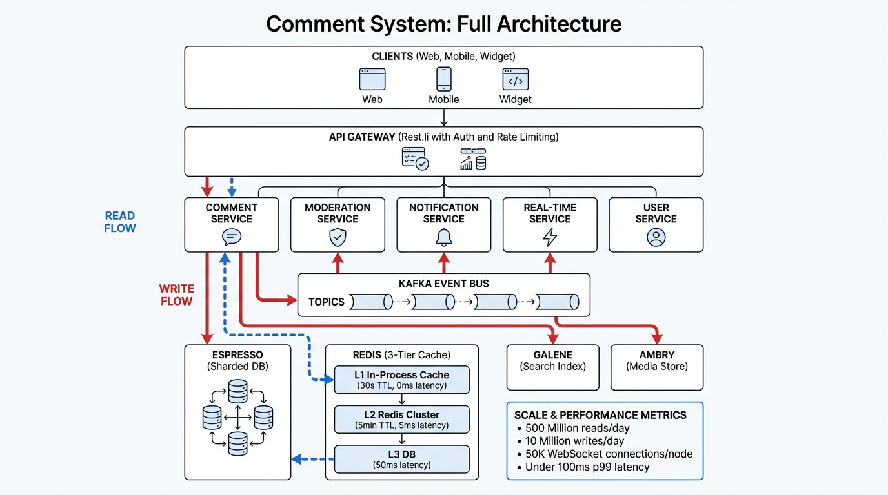
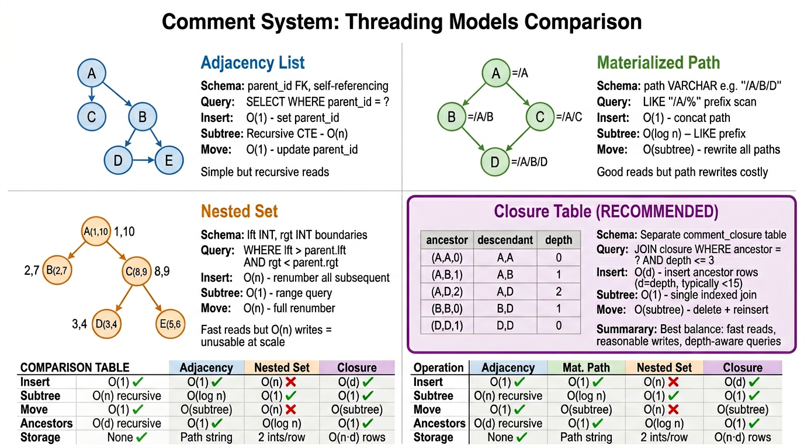
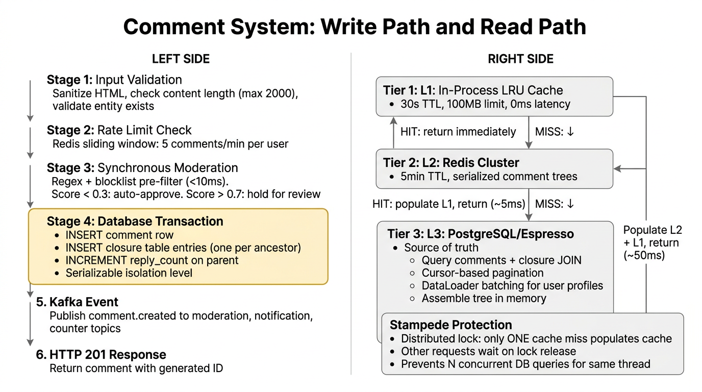
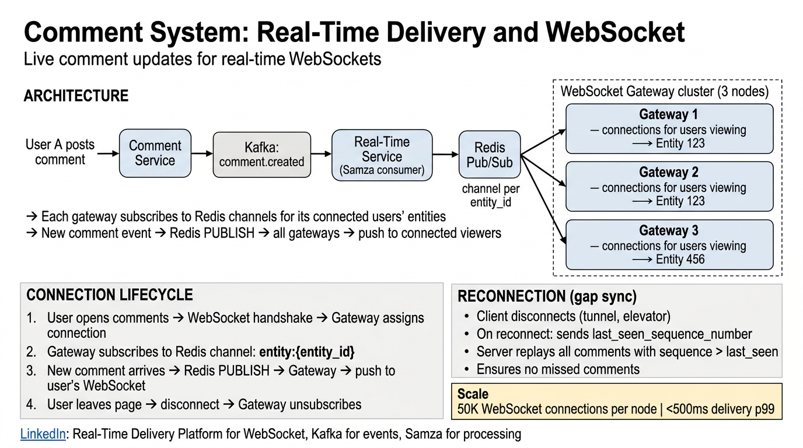
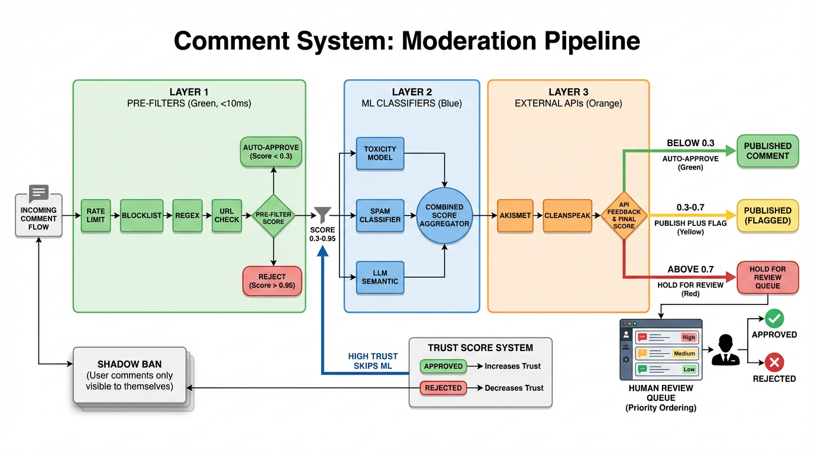
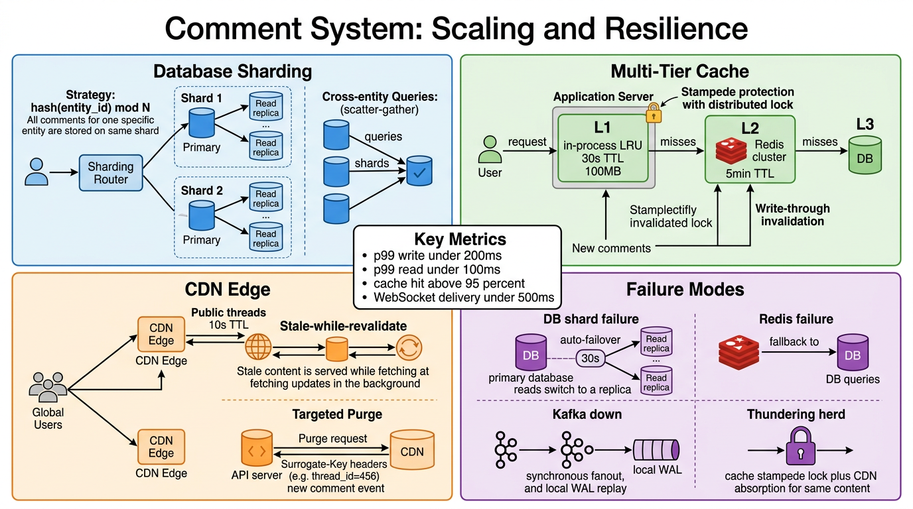

Threading Models, Real-Time Delivery, Spam Moderation, Cursor Pagination, Data Modeling at Scale — Complete Architecture Reference
Comment systems appear deceptively simple: accept text, store it, render a list. In practice, they hide deep complexity in data modeling (representing trees efficiently), query optimization (rendering nested threads without N+1 queries), real-time delivery (pushing new comments to thousands of viewers instantly), moderation (filtering spam and toxicity at scale), and abuse prevention (rate limiting, shadow banning, trust scoring). This guide covers each of these dimensions in production-grade detail.

comment.created, comment.voted, comment.flagged, comment.moderated) decouple the write path from downstream consumers. Samza/Flink consumers process events for moderation, counters, search indexing, and real-time delivery.POST /v1/threads/{id}/comments with body, parent_id, and auth token.comment.created event with full payload.The single most consequential architectural decision in a comment system is how to represent and query tree-structured data. The threading model determines write performance, read efficiency, move/reparent cost, and query complexity. There are four classical approaches, each with fundamentally different trade-offs. Getting this wrong means either rebuilding the data layer later or living with permanent performance limitations.
Each comment stores a parent_id foreign key pointing to its direct parent. Top-level comments have parent_id = NULL. This is the simplest model and the most natural mapping of a tree to a relational table.
-- Fetch top-level comments
SELECT * FROM comments
WHERE thread_id = ? AND parent_id IS NULL
ORDER BY created_at DESC LIMIT 20;
-- Fetch direct replies
SELECT * FROM comments
WHERE parent_id = ? ORDER BY created_at ASC;
-- Recursive CTE to get full subtree (PostgreSQL)
WITH RECURSIVE comment_tree AS (
SELECT id, parent_id, body_html, depth, created_at
FROM comments WHERE id = :root_id
UNION ALL
SELECT c.id, c.parent_id, c.body_html, c.depth, c.created_at
FROM comments c
JOIN comment_tree ct ON c.parent_id = ct.id
)
SELECT * FROM comment_tree ORDER BY depth, created_at;
Each comment stores its full ancestry as a path string, e.g., /A/B/D/. Subtree queries become prefix scans. Depth is computed by counting delimiters.
LIKE prefix scan or GIN trigram indexLIKE prefix queries use partial index only — not as efficient as B-tree equality
-- Schema addition
ALTER TABLE comments ADD COLUMN path VARCHAR(500);
-- e.g., path = '/A/B/D/'
-- Insert: parent path = '/A/B/', new comment id = 'D'
INSERT INTO comments (id, thread_id, parent_id, path, ...)
VALUES ('D', :thread, 'B', '/A/B/D/', ...);
-- Fetch all descendants of comment B
SELECT * FROM comments
WHERE thread_id = ? AND path LIKE '/A/B/%'
ORDER BY path, created_at;
-- GIN trigram index for fast prefix matching
CREATE INDEX idx_comments_path_trgm
ON comments USING gin (path gin_trgm_ops);
Each node stores lft and rgt boundary values. A node's descendants have lft values between the parent's lft and rgt. Reads are extremely fast (single range scan), but writes are catastrophically expensive.
(lft, rgt)lft sortlft or rgt > insertion point
-- Schema additions
ALTER TABLE comments ADD COLUMN lft INT, ADD COLUMN rgt INT;
-- Fetch all descendants of a comment
SELECT child.* FROM comments child, comments parent
WHERE child.thread_id = ?
AND parent.id = :parent_id
AND child.lft > parent.lft
AND child.rgt < parent.rgt
ORDER BY child.lft;
-- Insert requires gap creation (O(n) updates!)
UPDATE comments SET rgt = rgt + 2
WHERE thread_id = ? AND rgt >= :insertion_point;
UPDATE comments SET lft = lft + 2
WHERE thread_id = ? AND lft > :insertion_point;
INSERT INTO comments (lft, rgt, ...) VALUES (:insertion_point, :insertion_point + 1, ...);
A Closure Table uses a separate junction table (comment_closure) that stores every ancestor-descendant pair with its depth. This denormalizes the tree structure into a flat, indexed lookup table.
ancestor_id.descendant_id.depth column.CREATE TABLE comment_closure ( ancestor_id UUID NOT NULL REFERENCES comments(id), descendant_id UUID NOT NULL REFERENCES comments(id), depth INT NOT NULL DEFAULT 0, PRIMARY KEY (ancestor_id, descendant_id) ); CREATE INDEX idx_closure_descendant ON comment_closure(descendant_id, depth); CREATE INDEX idx_closure_ancestor ON comment_closure(ancestor_id, depth);
For a tree A → B → D (A is root, B is child of A, D is child of B), the closure table contains:
| ancestor_id | descendant_id | depth |
|---|---|---|
A | A | 0 |
A | B | 1 |
A | D | 2 |
B | B | 0 |
B | D | 1 |
D | D | 0 |
Every node has a self-referencing entry at depth 0. Adding node E under B would insert: (B,E,1), (A,E,2), (E,E,0) — exactly depth + 1 rows.
-- Insert a new comment C_new under parent P -- Step 1: Insert the comment row INSERT INTO comments (id, thread_id, parent_id, body_raw, body_html, depth, ...) VALUES (:new_id, :thread, :parent_id, :body_raw, :body_html, :depth, ...); -- Step 2: Insert closure entries -- Copy all ancestors of the parent, incrementing depth by 1 INSERT INTO comment_closure (ancestor_id, descendant_id, depth) SELECT ancestor_id, :new_id, depth + 1 FROM comment_closure WHERE descendant_id = :parent_id; -- Step 3: Insert self-reference INSERT INTO comment_closure (ancestor_id, descendant_id, depth) VALUES (:new_id, :new_id, 0);
-- Get full subtree of comment A (all descendants) SELECT c.* FROM comments c JOIN comment_closure cc ON c.id = cc.descendant_id WHERE cc.ancestor_id = :comment_a_id AND cc.depth > 0 ORDER BY c.depth, c.created_at; -- Get direct children only (depth = 1) SELECT c.* FROM comments c JOIN comment_closure cc ON c.id = cc.descendant_id WHERE cc.ancestor_id = :parent_id AND cc.depth = 1 ORDER BY c.created_at; -- Get all ancestors of a comment (breadcrumb) SELECT c.* FROM comments c JOIN comment_closure cc ON c.id = cc.ancestor_id WHERE cc.descendant_id = :comment_id AND cc.depth > 0 ORDER BY cc.depth DESC;
| Operation | Adjacency | Mat. Path | Nested Set | Closure | Winner |
|---|---|---|---|---|---|
| Insert | O(1) | O(1) | O(n) | O(d) ≈ O(1) | Adjacency |
| Get subtree | O(n) recursive | O(log n) LIKE | O(1) range | O(1) join | Closure |
| Move subtree | O(1) | O(subtree) | O(n) | O(subtree) | Adjacency |
| Get ancestors | O(d) recursive | O(1) split | O(log n) | O(1) join | Closure |
| Get depth | Recursive | Count slashes | Calculate | Stored | Closure |
| Storage overhead | None | Path string | 2 ints/row | O(n×d) rows | Adjacency |
Adjacency List wins on pure insert speed and storage, but Closure Table wins on the operations that dominate a comment system’s workload: subtree retrieval, ancestor lookup, and depth-aware queries. Since depth is capped (≤10–15), the O(d) insert overhead is negligible. The O(n×d) storage is a modest trade-off: a 10M-comment system with avg depth 5 produces ~50M closure rows — well within a single shard’s capacity. The closure table also pairs naturally with cursor-based pagination (Section 6) and DataLoader batching (Section 4).

WHERE path LIKE '/A/%'. The path string grows with depth.WHERE lft BETWEEN 1 AND 8. Inserting a new node under C requires incrementing lft/rgt for all nodes to the right.JOIN closure WHERE ancestor = A. One indexed join, no recursion.The data model consists of six core tables. The design prioritizes read performance through denormalization, write safety through transactional integrity, and operational flexibility through separation of concerns.
users| Column | Type | Description |
|---|---|---|
id | UUID v7 (PK) | Time-ordered unique identifier |
username | VARCHAR(64) | Display name |
trust_score | FLOAT | 0.0–1.0, updated by moderation feedback loop |
is_verified | BOOLEAN | Email/phone verified |
created_at | TIMESTAMPTZ | Account creation time |
threads| Column | Type | Description |
|---|---|---|
id | UUID v7 (PK) | Thread identifier |
entity_type | ENUM | POST, VIDEO, ARTICLE, PRODUCT |
entity_id | BIGINT | External entity ID (maps comment thread to external resource) |
comment_count | INT | Denormalized total comment count |
is_locked | BOOLEAN | Prevent new comments when true |
created_at | TIMESTAMPTZ | Thread creation time |
threads table? It decouples the comment system from external entities. Any service can create a thread by providing (entity_type, entity_id). The thread table also holds thread-level metadata (locked status, total count) without polluting the comment rows.
comments| Column | Type | Description |
|---|---|---|
id | UUID v7 (PK) | Time-ordered, no enumeration, distributed generation, B-tree locality |
thread_id | UUID (FK) | References threads(id) — partition key |
parent_id | UUID (FK, nullable) | NULL for root comments, FK to parent comment |
user_id | UUID (FK) | Comment author |
body_raw | TEXT | Original Markdown input from user |
body_html | TEXT | Pre-rendered sanitized HTML (avoids render-time XSS filtering) |
vote_count | INT DEFAULT 0 | Denormalized upvotes minus downvotes |
reply_count | INT DEFAULT 0 | Denormalized direct child count |
depth | SMALLINT | Nesting level (0 = root, max 10) |
mod_score | FLOAT | ML moderation confidence (0.0 = clean, 1.0 = spam/toxic) |
status | ENUM | ACTIVE, DELETED, FLAGGED, SPAM |
created_at | TIMESTAMPTZ | Creation timestamp (sort key) |
updated_at | TIMESTAMPTZ | Last edit timestamp |
comment_closure| Column | Type | Description |
|---|---|---|
ancestor_id | UUID (FK) | Ancestor comment ID |
descendant_id | UUID (FK) | Descendant comment ID |
depth | INT | Distance from ancestor to descendant (0 = self) |
PRIMARY KEY (ancestor_id, descendant_id) INDEX idx_closure_desc ON comment_closure(descendant_id, depth) INDEX idx_closure_anc ON comment_closure(ancestor_id, depth)
votes| Column | Type | Description |
|---|---|---|
user_id | UUID (FK) | Voter |
comment_id | UUID (FK) | Target comment |
value | SMALLINT | +1 (upvote) or -1 (downvote) |
created_at | TIMESTAMPTZ | Vote timestamp |
UNIQUE CONSTRAINT (user_id, comment_id) -- one vote per user per comment
flags| Column | Type | Description |
|---|---|---|
user_id | UUID (FK) | Reporter |
comment_id | UUID (FK) | Flagged comment |
reason_code | ENUM | SPAM, ABUSE, HARASSMENT, MISINFORMATION, OTHER |
created_at | TIMESTAMPTZ | Flag timestamp |
Storing both body_raw (Markdown) and body_html (sanitized HTML) avoids re-rendering on every read. The HTML is generated once on write (or edit) through a sanitization pipeline that strips XSS vectors while preserving safe formatting. Edits update both columns atomically.
vote_count and reply_count are denormalized on the comment row to avoid COUNT(*) aggregations on every read. Updated atomically via SET vote_count = vote_count + 1 inside the vote/reply transaction. Eventually consistent (5s max lag) for display, but the source-of-truth is always the votes/comments tables.
Storing the ML moderation score directly on the comment enables fast filtering (WHERE mod_score < 0.7) without joining to a moderation table. Updated asynchronously as ML analysis completes. Supports threshold-based auto-actions without additional queries.
Time-ordered: monotonically increasing within a millisecond, preserving B-tree insert locality. No enumeration: unlike auto-increment, attackers can’t guess comment IDs. Distributed generation: no central ID server needed. B-tree friendly: sequential inserts avoid random page splits.
-- Primary read path: thread listing with sort CREATE INDEX idx_comments_thread_created ON comments (thread_id, created_at DESC, id); -- Top-sort variant CREATE INDEX idx_comments_thread_votes ON comments (thread_id, vote_count DESC, created_at DESC, id); -- Reply fetch CREATE INDEX idx_comments_parent_created ON comments (parent_id, created_at ASC, id) WHERE parent_id IS NOT NULL; -- Closure table indexes (already shown above) -- idx_closure_desc ON comment_closure(descendant_id, depth) -- idx_closure_anc ON comment_closure(ancestor_id, depth) -- User's comment history CREATE INDEX idx_comments_user ON comments (user_id, created_at DESC);
The partial index on parent_id WHERE NOT NULL excludes root comments, shrinking the index and speeding reply lookups. The composite (thread_id, created_at DESC, id) supports cursor-based pagination with no sort spill.

Validate body length (1–10,000 chars), depth check (parent depth < max), thread existence and lock status. Parse Markdown to HTML using a whitelist-based sanitizer (e.g., DOMPurify server-side) that strips <script>, onclick, javascript: URIs, and other XSS vectors while preserving <b>, <i>, <a>, <code>, <blockquote>.
Redis sliding-window rate limiter: max 5 comments per minute per user, max 20 per hour. Implemented as a sorted set with timestamps as scores. ZRANGEBYSCORE counts recent entries; ZADD records the new request. Returns 429 Too Many Requests if exceeded.
Fast pre-filter (<10ms): regex banned-word list, URL reputation check (DNS blocklist), content bounds check. If confidence > 0.95, reject immediately with 400. If < 0.3, proceed. Between 0.3–0.95, publish and flag for async deep analysis. This prevents obvious spam from ever reaching the database.
BEGIN;
-- Insert comment row
INSERT INTO comments (id, thread_id, parent_id, user_id,
body_raw, body_html, depth, mod_score, status, created_at, updated_at)
VALUES (:id, :thread, :parent, :user, :raw, :html,
:depth, :mod_score, 'ACTIVE', NOW(), NOW());
-- Insert closure entries (copy parent's ancestors + self)
INSERT INTO comment_closure (ancestor_id, descendant_id, depth)
SELECT ancestor_id, :id, depth + 1
FROM comment_closure WHERE descendant_id = :parent;
INSERT INTO comment_closure (ancestor_id, descendant_id, depth)
VALUES (:id, :id, 0);
-- Increment parent's reply_count
UPDATE comments SET reply_count = reply_count + 1
WHERE id = :parent;
-- Increment thread's comment_count
UPDATE threads SET comment_count = comment_count + 1
WHERE id = :thread;
COMMIT;
After transaction commits, publish comment.created event to Kafka with full comment payload, user metadata, and moderation scores. Kafka key = thread_id ensures ordering within a thread. If Kafka is unavailable, event is written to a local WAL buffer and replayed on recovery.
Return the created comment with all server-generated fields: id, created_at, body_html, vote_count: 0, reply_count: 0, depth. Client can optimistically render without waiting for WebSocket confirmation.
| Tier | Storage | TTL | Capacity | Latency |
|---|---|---|---|---|
| L1: In-Process LRU | Application heap (Caffeine/Guava) | 30 seconds | 100MB per instance | ~0ms |
| L2: Redis Cluster | Serialized comment trees (MessagePack) | 5 minutes | Shared cluster | ~5ms |
| L3: Database | Closure table JOIN + cursor pagination | N/A (source of truth) | Sharded primary + 2 replicas | ~50ms |
When a cache entry expires on a viral thread, thousands of concurrent requests would all miss cache and hit the DB simultaneously. Distributed lock (Redis SET ... NX EX): only the first cache miss acquires the lock and populates. All other requests wait on the lock (with a short timeout) and then read the freshly populated cache. Fallback: serve stale cache if lock wait exceeds 100ms.

comment.created event to Kafka after the DB transaction commits.entity:{entity_id}.{"action": "subscribe", "entity_id": "X"}. Gateway subscribes to entity:X Redis channel if not already subscribed (refcount tracks viewers per channel).comment.created, comment.voted, comment.deleted events as they arrive on the channel.WebSocket delivery is at-most-once: if a client is disconnected when a comment arrives, it misses that event. To handle this:
sequence_number per entity (backed by a Redis counter).last_seen_sequence_number.sequence > last_seen and replays them.Each WebSocket Gateway node handles 50,000 concurrent connections using non-blocking I/O (epoll/kqueue). Memory footprint: ~20KB per connection (buffers + metadata) = ~1GB per node. A cluster of 20 gateway nodes supports 1M concurrent viewers. Horizontal scaling: add nodes and let the load balancer distribute new connections via least-connections algorithm.
Comment threads use a two-level pagination scheme:
parent_id IS NULL) in a thread.This avoids loading the entire tree upfront. A thread with 10K comments might show 20 root comments initially, each with a “Show 12 replies” button that triggers a Level 2 fetch.
| Pagination Level | Cursor Fields | Use Case |
|---|---|---|
| Root (Newest/Oldest) | (created_at, id) |
Chronological root comment listing |
| Root (Top) | (vote_count, created_at, id) |
Popularity-sorted root comments |
| Replies | (parent_id, created_at, id) |
Replies under a specific parent, always chronological |
| Mode | ORDER BY Clause | Use Case |
|---|---|---|
| Top | vote_count DESC, created_at DESC, id DESC |
Default — surfaces the highest-scored comments |
| Newest | created_at DESC, id DESC |
Real-time discussions, live events, breaking news |
| Oldest | created_at ASC, id ASC |
Reading threads chronologically from the beginning |
OFFSET 20 skips 5 unseen comments and shows 5 duplicates. In a real-time system with 10K writes/sec, every page request is inconsistent.OFFSET 10000 forces the database to scan and discard 10,000 rows before returning the next 20. At scale, this causes query timeouts and full-table scans.LIMIT or skip items entirely, confusing client rendering logic.-- Newest sort: cursor = (last_created_at, last_id) SELECT * FROM comments WHERE thread_id = :thread AND parent_id IS NULL AND (created_at, id) < (:cursor_ts, :cursor_id) ORDER BY created_at DESC, id DESC LIMIT 21; -- fetch 21, return 20, use 21st to determine has_more -- Top sort: cursor = (last_vote_count, last_created_at, last_id) SELECT * FROM comments WHERE thread_id = :thread AND parent_id IS NULL AND (vote_count, created_at, id) < (:cursor_votes, :cursor_ts, :cursor_id) ORDER BY vote_count DESC, created_at DESC, id DESC LIMIT 21;
The cursor is encoded as an opaque base64 token: base64(vote_count:created_at:id). The client treats it as a black box, allowing the server to change the underlying sort strategy without breaking API compatibility.
{
"data": [
{"id": "01912345-...", "body_html": "<p>Great post!</p>", "vote_count": 42, ...},
{"id": "01912344-...", "body_html": "<p>I disagree...</p>", "vote_count": 38, ...}
],
"has_more": true,
"next_cursor": "eyJ2IjozOCwiYyI6IjIwMjYtMDQtMDdUMTQ6MzA6MDBaIiwiaSI6IjAxOTEyMzQ0In0="
}

| Score Range | Action | Visibility |
|---|---|---|
| < 0.3 | Auto-approve | Immediately visible to all users |
| 0.3 – 0.7 | Publish + Flag for review | Visible but queued for human review |
| > 0.7 | Hold for review | Hidden until moderator approves |
Thresholds are tunable per-tenant: a children’s platform might set auto-approve at <0.1, while a news discussion forum might use <0.4.
priority = report_count × ML_boundary_proximity × (1 / user_trust_score)
Comments with many reports, borderline ML scores, and low-trust authors are reviewed first.
Feedback loop: Every approve/reject decision is logged as a labeled training example. The ML models are retrained weekly on the latest moderation decisions, continuously improving accuracy.
Shadow-banned users can still post comments, but their comments are only visible to themselves (the API returns them normally for the banned user’s session but excludes them for everyone else). This is more effective than hard bans because:
WHERE user_id NOT IN (shadow_banned_set) filter on reads, using a Redis set for O(1) membership check| Factor | Effect on Trust |
|---|---|
| Comment approved by moderator | +0.02 |
| Comment rejected by moderator | -0.10 |
| Account age > 30 days | +0.1 baseline |
| Email/phone verified | +0.1 baseline |
| Multiple spam rejections in 24h | -0.30 |
SPAM, ABUSE, HARASSMENT, MISINFORMATION, OTHER

hash(entity_id) % N distributes threads across shards. All comments for a single thread land on the same shard, ensuring single-shard tree reconstruction.hash(entity_id) % N where N = number of shardsOn comment creation: immediately invalidate the L2 Redis cache for the affected thread. L1 cache expires naturally (30s TTL). This ensures new comments appear within 30s even without WebSocket delivery.
Distributed lock (SETNX comment_lock:{thread_id} {instance_id} EX 5): only one cache miss populates L2. Others wait up to 100ms on the lock, then fall through to stale cache or direct DB query.
stale-while-revalidate: 30 — serve stale while refreshing in backgroundSurrogate-Key: thread:{id}) enable targeted purge on comment creation without flushing the entire CDN cacheWHERE user_id IN (...) query.vote_count and reply_count on the comment row avoid COUNT(*) per-comment on reads.| Metric | Target | Measurement |
|---|---|---|
| Comment write latency p99 | < 200ms | Time from API request to HTTP 201 response |
| Thread read latency p99 | < 100ms | Time to return a page of comments (including tree assembly) |
| WebSocket delivery p99 | < 500ms | Time from DB commit to client WebSocket frame |
| Moderation pipeline p99 | < 1s | Time from comment creation to final mod_score assignment |
| Cache hit ratio (L1+L2) | > 95% | Percentage of reads served from L1 or L2 cache |
| Error rate by endpoint | < 0.1% | 5xx responses / total requests per endpoint |
| Condition | Severity | Action |
|---|---|---|
| Write latency p99 > 500ms for 5 min | Critical | Page oncall; check DB shard health and Kafka lag |
| Cache hit ratio < 85% for 10 min | Warning | Check Redis cluster health and eviction rates |
| WebSocket connections drop >20% in 5 min | Critical | Check gateway node health and network partitions |
| Moderation queue > 10K items | Warning | Check ML pipeline throughput; consider scaling consumers |
| Replication lag > 10s on any shard | Critical | Check replica I/O; potential data loss on failover |
Every request carries a trace ID propagated through all layers:
Trace: abc-123-def
├─ [Gateway] auth + rate limit 12ms
├─ [Comment Svc] validation + sanitization 8ms
├─ [Mod Service] pre-filter scoring 6ms
├─ [Database] transaction (insert+closure) 35ms
├─ [Redis] cache invalidation 2ms
├─ [Kafka] event publish 4ms
└─ [Total] write path end-to-end 67ms
Async (same trace ID):
├─ [Samza] moderation ML scoring 180ms
├─ [Redis PubSub] real-time publish 3ms
└─ [WS Gateway] client delivery 8ms
Traces are collected via OpenTelemetry, stored in Jaeger/Tempo, and correlated with Grafana dashboards for end-to-end latency analysis.
When a thread goes viral (e.g., celebrity post, breaking news), a single entity can receive 100K+ reads/sec:
| Component | Generic | LinkedIn Equivalent |
|---|---|---|
| Primary Database | PostgreSQL (sharded) | Espresso — Horizontally partitioned document store, sharded by entity_id |
| Cache Layer | Redis / Memcached | Couchbase — Distributed cache for hot comment trees with TTL-based eviction |
| Event Bus | Kafka | Kafka — LinkedIn-created; all async event delivery (comment.created, moderation events) |
| ML Platform | Custom ML pipeline | Pro-ML — Training and serving for spam/toxicity models |
| Stream Processing | Flink / Spark Streaming | Samza — Near-real-time stream processing for moderation, counters, notifications |
| API Framework | REST / gRPC | Rest.li — LinkedIn’s REST framework with built-in rate limiting and auth |
| Real-Time Delivery | WebSocket / SSE | RTDP — Real-Time Data Platform for push-based event delivery |
| Full-Text Search | Elasticsearch | Galene — LinkedIn’s search engine for comment content indexing |
| Media Storage | S3 / GCS | Ambry — Blob storage for comment attachments (images, files) |
Espresso supports document-level partitioning by entity_id, keeping all comments for a post co-located. It provides:
parent_id and user_id queriescomment_mentions tableUPDATE comments SET vote_count = vote_count + 1 WHERE id = ?(user_id, comment_id) in votes tablepinned BOOLEAN and pinned_at TIMESTAMPTZ to comments tablecomment_edits table with (comment_id, body_raw, body_html, edited_at)